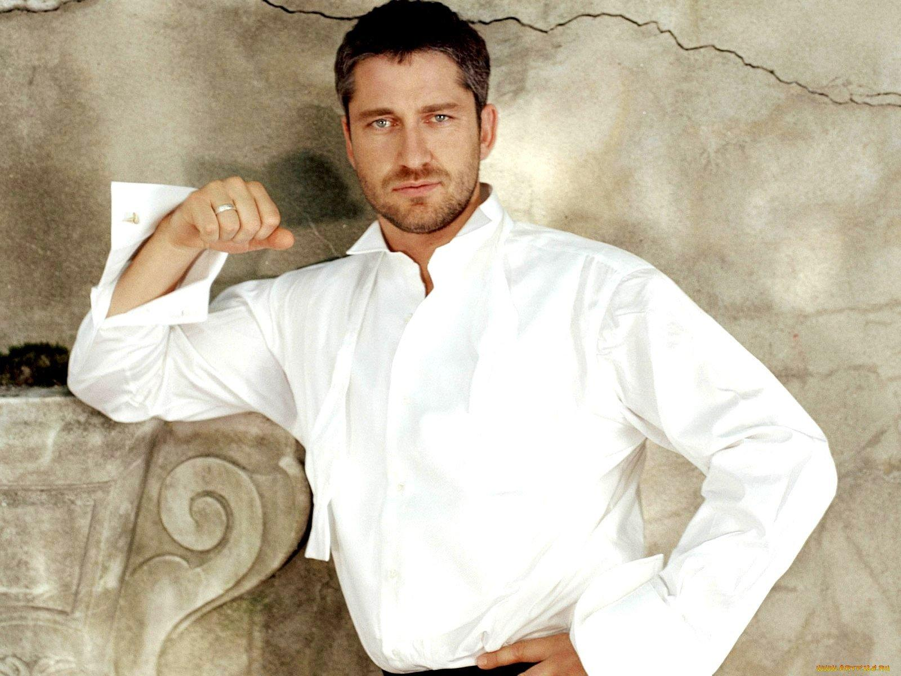

Выбор правильного трека
Получаешь ясность "что доказываем" и "какими документами".
Для удаленщиков из РФ и стран СНГ
Digital Nomad Visa с предсказуемым путем от документов до одобрения. Сопровождаем на каждом этапе.
От проверки кейса до одобрения ВНЖ - с сопровождением на каждом этапе.
Получаешь ясность "что доказываем" и "какими документами".
Снижаем риск отказа из-за несостыковок в доказательствах дохода.
Персональный чек-лист, порядок действий и pre-check перед подачей.
Запись, подача, трекинг статуса и план продления без неожиданностей.
Хочешь устойчивую жизнь в Европе - свободно перемещаться и иметь предсказуемый статус на годы вперед.
Хочешь базу в ЕС, но без привязки к испанской компании и локальному найму.
Не хочешь зависеть от краткосрочных туристических виз и постоянных вылетов.
Сложно разобраться, что считать достаточным доказательством дохода.
Нужна ясность по срокам и требованиям, чтобы не переделывать документы.
Начни с бесплатной проверки - потом выбери уровень сопровождения под свои задачи.
Бесплатно
7 минут на вопросы
от EUR 490
единоразово
от EUR 990
до результата
Отзывы
Когда Алексей пришел к нам, у него уже было два неудачных черновика пакета и полное ощущение хаоса. Мы собрали понятный маршрут: проверили контракт, выровняли подтверждение дохода, дали шаблоны формулировок и провели pre-check перед подачей. В итоге его кейс прошел без досборов, а решение по ВНЖ он получил за 4 месяца. Сейчас живет в Валенсии и продлевает статус по заранее согласованному плану, без авралов и нервов.
Мария планировала переезд с мужем и ребенком, но боялась, что семейный пакет «развалится» по срокам и требованиям. Мы разделили процесс на этапы для каждого члена семьи: подготовили персональные чек-листы, синхронизировали дедлайны и заранее закрыли риски по документам. За счет этой координации семья подалась в одной логике и получила одобрение без повторных подач. Сейчас они уже обустроились в Барселоне и спокойно готовятся к следующему этапу продления.

Для Дмитрия ключевым было не «просто податься», а получить прогнозируемый управляемый процесс с понятной ответственностью. Мы начали с risk-скоринга, затем выстроили дорожную карту: что собираем, в каком порядке, какие доказательства усиливаем и на каких этапах контролируем качество. Благодаря этому он видел статус по каждому шагу, понимал сроки и не терял время на догадки. Итог - одобрение ВНЖ в рабочие сроки и четкий план дальнейшего продления для семьи и бизнеса.
Почему мы?
Сравни подходы и выбери то, что действительно решает задачу.
Разрозненные советы, противоречивая информация, риск ошибок.
Связанный КПР, валидация пакета и ответственность за результат процесса.
Подача «как у всех» без учета специфики вашего кейса.
Квалификация трека, проверка доказательств дохода и управление рисками по всей цепочке.
Разовая встреча без сопровождения, потом сам разбираешься.
Сопровождение до результата: чек-листы, документы, подача, трекинг, продление.
Вопросы и ответы
Ответы на самые популярные вопросы о процессе получения ВНЖ Испании.
Обычно рассматривается Digital Nomad Visa, но выбор зависит от структуры дохода и состава семьи.
В среднем 4-6 месяцев при корректной подготовке документов и своевременной подаче.
Минимальный порог зависит от требований на момент подачи и количества членов семьи.
Да, но маршрут и точка подачи подбираются индивидуально после проверки кейса.
Мы оцениваем риск-факторы и собираем индивидуальный пакет документов под вашу ситуацию.
Прозрачно по этапам: проверка кейса, подготовка пакета и полное сопровождение по выбранному тарифу.
Бесплатная проверка
Пройди бесплатную проверку кейса за 7 минут — узнай свой маршрут и получи персональный чек-лист документов.
Оставьте заявку, и мы свяжемся с вами с персональным маршрутом.